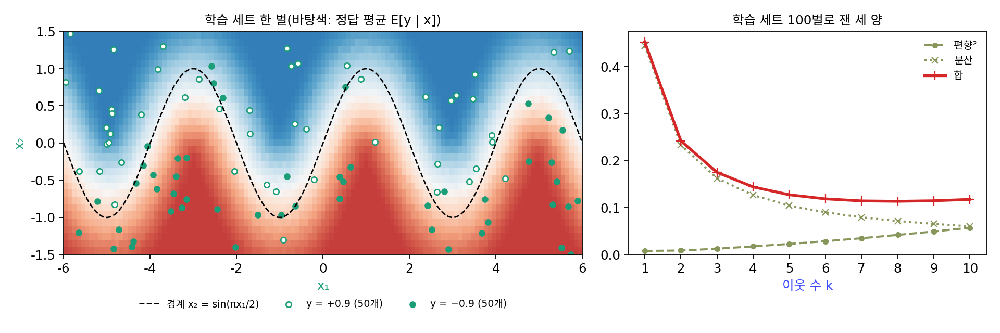
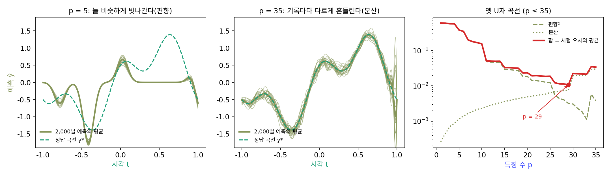
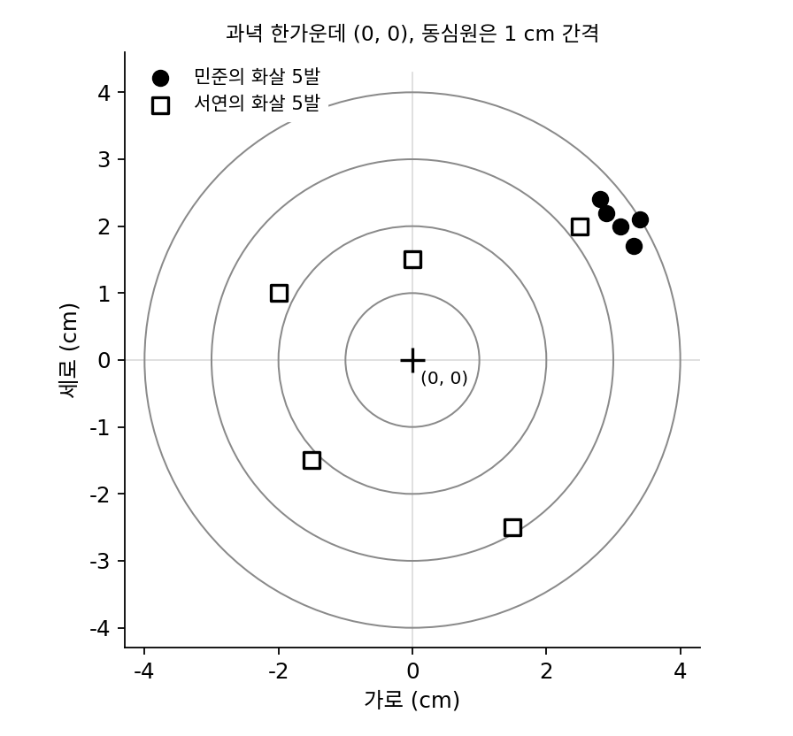
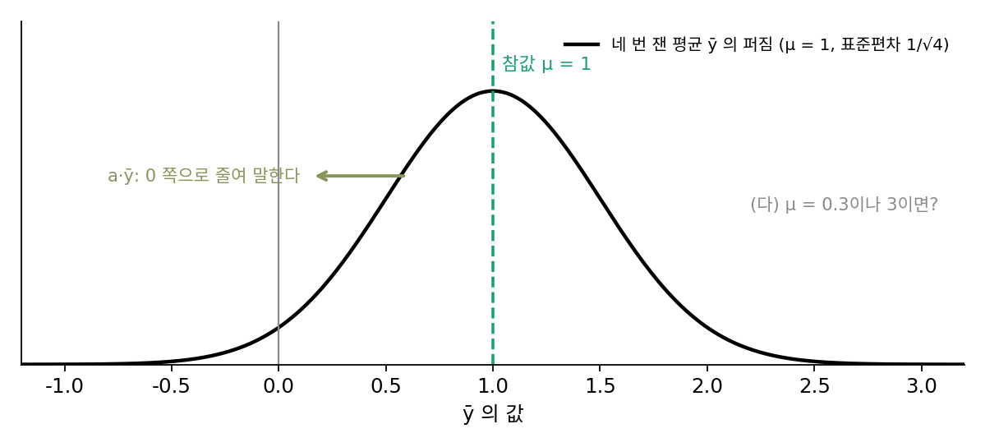
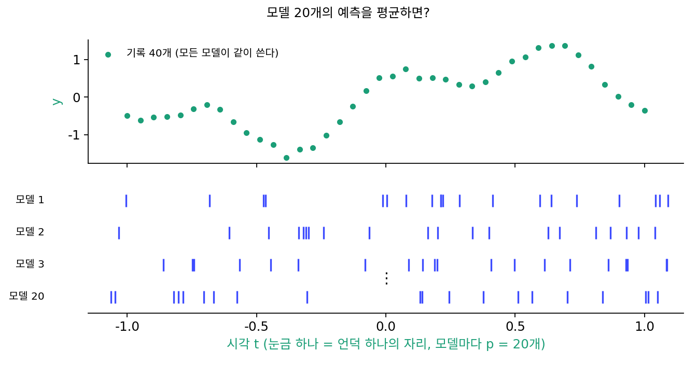

이중 하강: 외우고 나서도 나아진다
이 장의 물음
머신러닝 수업에서 가장 먼저 배우는 경고 가운데 하나가 오버피팅이다. 모델이 너무 크면 학습 데이터의 노이즈까지 외워 버려서, 처음 보는 데이터에서는 오히려 틀린다고 배운다. 그래서 학습 손실은 계속 내려가는데 검증 손실이 올라가기 시작하면 멈추라고 배운다. 그런데 실제로 쓰는 신경망을 보면 이 경고와 맞지 않는 일이 많다. 작은 컬러 사진을 열 종류로 나눈 데이터 CIFAR-10의 학습 이미지는 5만 장인데, 이 데이터에 흔히 쓰는 ResNet-18의 파라미터(학습으로 고치는 숫자)는 1,100만 개쯤이다. 숫자 하나로 이미지 한 장씩을 외우고도 남는다. 실제로 2016년의 한 연구는 CIFAR-10에 쓰는 신경망들이 라벨을 무작위로 바꿔 놓은 이미지까지 학습 데이터를 완벽하게 외울 수 있음을 보였다. 그런데도 제대로 된 라벨로 학습하면 처음 보는 이미지를 잘 맞히니, 외울 수 있는 만큼 큰 모델이 왜 외우지 않고 일반화하는 것일까?
모델의 크기를 조금씩 키워 가며 시험 오차를 재 보면 이상한 일이 하나 더 보인다. 시험 오차가 내려가다가 어느 크기에서 갑자기 치솟고, 그 크기를 넘어서면 다시 내려간다. 「작은 모델은 모자라고, 큰 모델은 오버피팅한다」는 이야기로는 두 번째 내리막을 설명할 수 없다.
학습 시간에도 비슷한 일이 있다. 2022년에 발표된 한 실험에서는 작은 신경망이 학습 데이터를 다 맞힌 뒤에도 학습을 계속 돌렸더니, 처음 보는 문제의 정답률이 한참 동안 낮은 채로 머물다가 어느 순간 100% 가까이 뛰어올랐다. 학습 손실은 이미 0에 가까웠는데 무엇이 계속 바뀌고 있었을까?
이 장은 다음 물음에 차례로 답한다.
- 「너무 작아도, 너무 커도 나쁘다」는 옛 그림은 무엇을 근거로 했을까?
- 모델을 키우면 시험 오차는 왜 치솟았다가 다시 내려갈까? 치솟는 자리는 어디일까?
- 그 봉우리는 왜 생기고, 무엇으로 없앨 수 있을까?
- 학습 데이터를 다 외운 뒤에도 학습을 계속하면 왜 일반화가 좋아질 수 있을까?
편향–분산: 너무 단순해도, 너무 흔들려도 틀린다
곡선 맞추기를 해 본 사람은 차수를 고르는 데서 망설여 본 적이 있을 것이다. 1차 직선으로는 점들의 굽이를 따라가지 못하고, 차수를 크게 올리면 점은 다 지나는데 점 사이에서 곡선이 출렁인다. 그 사이 어딘가에 알맞은 크기가 있을 것 같지만, 학습한 기록에서 틀린 정도는 모델을 키울수록 줄기만 하니 그것으로는 고를 수 없다. 그렇다면 「알맞다」는 무엇을 재서 정할까?
역사: 게만, 비넨스톡, 두르사의 「딜레마」
1992년 『뉴럴 컴퓨테이션(Neural Computation)』 4권 1호에 58쪽짜리 긴 논문 「신경망과 편향/분산 딜레마(Neural Networks and the Bias/Variance Dilemma)」가 실렸다. 지은이는 스튜어트 게만(Stuart Geman), 엘리 비넨스톡(Elie Bienenstock), 르네 두르사(René Doursat)다. 역전파가 다시 주목받으며 신경망이 한창 유행하던 때였다. 세 사람은 역전파로 학습한 신경망을 통계학이 오래 다뤄 온 회귀 추정기, 그것도 미리 정한 꼴 없이 데이터에서 함수의 모양까지 배우는 추정기로 보자고 했다. 그렇게 보면 통계학이 이미 아는 어려움이 그대로 신경망의 어려움이 된다. 오차는 「평균적으로 빗나가는 정도」와 「데이터가 바뀔 때마다 흔들리는 정도」 두 항으로 나뉘고, 하나를 줄이면 다른 하나가 커지기 쉽다. 그들은 인공 데이터와 손글씨 숫자로 실험한 뒤, 당시의 앞먹임 신경망은 기계 지각과 학습의 어려운 문제에 대체로 모자라며 진짜 어려움은 학습보다 표현에 있다고 결론지었다. 그 앞의 인공 데이터 실험에서는 사인 곡선으로 나뉜 평면 위의 점 100개로 k-최근접 이웃 회귀를 학습 세트 100벌에 되풀이해, 이웃 수 k를 늘리면 편향은 커지고 분산은 줄어드는 것을 숫자로 보였다. 「모델을 키우면 평균의 빗나감(편향)은 줄고 데이터마다의 흔들림(분산)은 커진다」는 생각은 통계학에서 먼저 나왔지만, 이 논문이 그것을 신경망 연구자들에게 널리 퍼뜨렸고 그 뒤 교과서마다 실리는 U자 곡선이 되었다.


편향과 분산으로 쪼개는 건 지금 보면 쉬워요. 기록을 몇천 벌 뽑아서 평균 내면 끝이잖아요.

그건 정답 곡선을 우리가 정해 둔 장난감이라서 되는 일이에요. 세 사람이 실험한 손글씨 숫자에는 정답 곡선이 있었을까요?

손글씨에는 정해 둔 정답 함수가 없죠. 그럼 평균 예측을 내려면 손글씨 데이터를 몇 벌이고 새로 모아야 하는데… 그건 못 했겠네요.

가진 데이터를 나눠 쓰는 수밖에 없었어요. 게다가 데이터 한 벌마다 신경망을 처음부터 다시 학습시켜야 하니, 같은 실험을 수천 번 되풀이할 계산도 없었고요.

「신경망은 대체로 모자라다」는 결론도 그 안에서 나온 거네요. 지금은 이미지 5만 장짜리 CIFAR-10에 파라미터 1,100만 개짜리 모델을 쓰는데요.
그 데이터도 그 모델도 1992년에는 없었어요. 그들 손에 있던 인공 데이터와 손글씨 숫자로 본 것을 그대로 적은 거예요.

정답을 모를 때도 두 항을 숫자로 가르려면, 정답을 우리가 정해 둔 문제를 만들어 같은 실험을 몇 번이고 되풀이해 보면 될까요?
기록 40개를 언덕으로 맞추기
평균의 빗나감과 데이터마다의 흔들림을 숫자로 갈라 보려면, 정답을 아는 문제에서 같은 실험을 여러 번 되풀이할 수 있어야 한다. 그래서 정답 곡선을 우리가 정해 두고 거기서 기록을 뽑는다. 정답 곡선은 y*(t) = sin(πt) + 0.5 cos(3πt)이고, 시각 t = −1부터 1까지 같은 간격으로 40번 잰다. 잴 때마다 표준편차 0.1인 노이즈가 섞여서, 기록 y는 정답 곡선에서 조금씩 벗어나 있다.
맞추는 모델은 종 모양 언덕 여러 개를 더한 곡선이다. 언덕 하나 φⱼ(t) = exp(−(t − cⱼ)²/(2 × 0.07²))은 자리 cⱼ에서 높이 1로 솟고 양옆으로 0.07쯤 퍼진다. 언덕 자리 cⱼ는 −1.1부터 1.1 사이에서 무작위로(씨앗을 고정해) 400개를 뽑아 두고, 그 가운데 앞의 p개를 쓴다. 언덕마다 높이 wⱼ를 곱해 더한 것이 예측 ŷ(t) = w₁φ₁(t) + … + wₚφₚ(t)이고, 높이들은 기록과의 제곱 오차가 가장 작아지게 정한다. 언덕 하나하나를 「특징」이라고 부르면, 이것은 무작위로 고른 특징 p개로 하는 선형 회귀다. 언덕 수 p 하나로 모델의 크기를 1부터 400까지 고르게 바꿀 수 있어서 이 장 내내 이 언덕 맞추기 장난감을 쓴다.
같은 시각에서 노이즈만 새로 뽑아 기록을 2,000벌 만들고, 기록마다 같은 p로 맞춘다. 그러면 시각마다 예측이 2,000개 생긴다. 그 평균이 정답 곡선에서 얼마나 벗어났는지와, 2,000개가 평균 둘레에서 얼마나 흩어졌는지를 시험 시각 801개에서 재어 평균 내면 다음과 같다.
| 언덕 수 p | 평균의 빗나감² | 흩어짐(분산) | 합 |
|---|---|---|---|
| 1 | 0.5972 | 0.0003 | 0.5974 |
| 5 | 0.3789 | 0.0012 | 0.3801 |
| 10 | 0.1524 | 0.0023 | 0.1547 |
| 20 | 0.0185 | 0.0049 | 0.0234 |
| 29 | 0.0032 | 0.0075 | 0.0107 |
| 33 | 0.0011 | 0.0202 | 0.0214 |
| 35 | 0.0038 | 0.0302 | 0.0340 |
언덕이 적으면 2,000벌 모두 비슷하게 틀린다. 굽이를 담을 언덕이 모자라서, 어떤 기록을 받아도 같은 곳에서 같은 쪽으로 빗나가기 때문이다. 언덕을 늘리면 평균은 정답 곡선에 붙지만, 이번에는 기록의 노이즈를 따라가느라 기록마다 다른 곡선이 나온다. 둘의 합은 p = 29에서 0.0107로 가장 작다.
이렇게 시험 오차의 평균을 「평균 예측이 정답에서 벗어난 정도의 제곱」과 「예측이 데이터마다 흔들리는 정도」로 쪼갠 것을 편향–분산 분해 (빗나감과 흔들림으로 쪼개기 / bias–variance decomposition)라 한다. 표의 앞 칸이 편향의 제곱이고 뒤 칸이 분산이며, 쪼개기는 어느 시각 t에서나 다음 등식으로 성립한다.
가운데 교차항은 평균하면 0이 되어 사라지므로, 편향의 제곱과 분산은 언제나 더해질 뿐 서로 지우지 않는다. 언덕 수를 늘리면 편향은 줄고 분산은 늘기 때문에 둘의 합은 U자를 그리고, U자의 가장 낮은 곳에 알맞은 크기가 있다. 게만과 동료들이 「딜레마」라고 부른 것이 이 줄다리기다.

ML에서: 검증 손실로 크기와 멈출 때를 고른다
실제 학습에서는 정답 곡선을 모르니 기록을 2,000벌 뽑을 수도 없다. 그래서 데이터 일부를 학습에 쓰지 않고 떼어 둔 검증 세트에서 오차를 재어 편향과 분산의 합을 추정한다. 모델의 크기, 정규화(가중치 감쇠나 드롭아웃처럼 모델이 데이터를 너무 따라가지 못하게 막는 장치)의 세기, 학습을 멈출 스텝 수를 검증 오차가 가장 낮은 곳에서 고른다. 검증 손실이 다시 오르기 시작하면 학습을 멈추는 조기 종료(early stopping)도 같은 생각에서 나왔고, 이 절의 U자 곡선이 이런 습관의 근거다. 다만 이 곡선은 언덕 수를 35까지만 그려서, 언덕을 기록 수 40에 가깝게 또는 그보다 많이 쓰면 어떻게 될지는 아직 보지 않았다.
문제 1. 두 사람의 화살
과녁 한가운데를 (0, 0)으로 두고(단위 cm) 민준과 서연이 화살을 다섯 발씩 쐈다. 민준: (3.1, 2.0), (2.8, 2.4), (3.3, 1.7), (2.9, 2.2), (3.4, 2.1). 서연: (−2.0, 1.0), (1.5, −2.5), (2.5, 2.0), (−1.5, −1.5), (0.0, 1.5). (가) 화살이 한가운데에서 떨어진 거리의 제곱을 평균하면 각각 얼마인가? (나) 그 제곱 평균을 「평균 자리가 한가운데에서 떨어진 거리의 제곱」과 「화살이 평균 자리 둘레로 흩어진 정도」로 쪼개라. (다) 다음 시합까지 한 사람은 조준기를 고칠 시간이, 다른 한 사람은 손떨림을 줄일 연습 시간이 있다. 누가 무엇을 해야 하는가?

제 화살은 다섯 발이 거의 한 점에 모였어요. 서연이는 사방에 흩어졌고요. 당연히 제가 더 잘 쐈죠.
한가운데에서 떨어진 거리의 제곱을 평균해 보면요?
계산하니까 제가 14.042, 서연이가 6.100이에요. 어, 제가 두 배 넘게 나쁘네요. 모여 있기만 하고 다 같이 오른쪽 위로 가 있어서요.

쪼개 보면 민준이는 평균 자리가 (3.10, 2.08)이라 그 거리의 제곱이 13.936이고, 흩어짐은 0.106뿐이야. 나는 평균 자리가 (0.10, 0.10)이라 0.020이고 흩어짐이 6.080. 두 값을 더하면 각자의 14.042와 6.100이 그대로 나와.
편향²과 흩어짐(분산)을 더하면 왜 맞아떨어질까요? 화살 하나가 한가운데에서 벗어난 벡터를 「평균 자리까지」와 「평균 자리에서 화살까지」 두 토막으로 나눠 제곱해 보세요.

제곱하면 두 토막의 곱이 남는데, 「평균 자리에서 화살까지」를 다섯 발에 걸쳐 더하면 0이 돼요. 평균 자리의 정의가 그거니까요. 그래서 곱하는 항이 사라지고 두 제곱만 남아요. 본문의 편향–분산 분해에서 교차항이 사라지는 것과 같은 계산이에요.

그럼 저는 조준기를 고쳐야 하고, 서연이는 손떨림 연습이네요. 연습을 아무리 해도 제 평균 자리는 안 움직이니까요. 과제 채점에서 늘 똑같이 2점씩 깎이는 학생은 실수가 아니라 개념을 잘못 안 거라던 조교님 말이 생각나요.
문제 2. 일부러 줄여 말하기
측정 한 번에 표준편차 1인 노이즈가 섞이는 어떤 양의 참값 μ를 네 번 재서 평균 ȳ를 냈다. 추정값으로는 ȳ 그대로 대신 a·ȳ(0 < a ≤ 1)을 쓰기로 한다. (가) μ = 1일 때 a = 1과 a = 0.8의 평균 제곱 오차를 편향²과 분산으로 쪼개어 구하라. (나) 오차가 가장 작은 a를 μ로 나타내라. (다) μ = 0.3이나 μ = 3이라면 a = 0.8은 여전히 좋은가?

a = 1이면 편향이 0이니까 그게 가장 좋은 거 아니에요? 일부러 0.8을 곱해서 틀리게 만들 이유가 없잖아요.
계산으로 확인해 볼까요? ȳ의 분산부터요.
네 번 평균이니까 분산은 1/4이에요. a = 1이면 편향² 0, 분산 0.25로 합이 0.25.
a = 0.8이면 편향은요?

(0.8 − 1) × 1 = −0.2라 제곱이 0.04, 분산은 0.8² × 0.25 = 0.16. 합이… 0.2예요? 틀리게 만들었는데 오차가 더 작아요.
20만 번 모의실험을 돌려 봤는데 a = 1은 0.2491, a = 0.8은 0.1993이 나와요. 계산이 맞아요.
오차를 a의 함수로 쓰면 (1 − a)²μ² + a²/4예요. 가장 작은 곳은요?
a로 미분해서 0으로 놓으면… a* = μ²/(μ² + 1/4)예요. μ = 1이면 0.8이 바로 그 자리네요.
(다)의 μ = 0.3이나 μ = 3에서는요?
a*가 μ = 0.3이면 0.2647, μ = 3이면 0.9730이야. 둘 다 0.8이랑 멀어.

a = 0.8을 μ = 3에 쓰면 오차가 0.52로 a = 1의 0.25보다 훨씬 나빠지네요. 얼마나 줄여야 좋은지는 모르는 참값에 달려 있어요.

그래요. 편향을 조금 받아들이고 분산을 크게 줄이는 거래는 이득일 수 있지만, 얼마나 줄일지는 그 문제에 달렸어요. 그래서 실제로는 그 세기를 검증 오차로 골라요.
편향이 0인 추정량이 가장 좋다는 건 분산이 같을 때만 맞는 말이었네요. 통계 수업에서 불편 추정량을 「좋은 성질」로만 배웠는데, 오차 전체로 보면 반쪽짜리 기준이었어요.
문제 3. 모델 스무 개의 평균
기록 40개(이 절의 기록 한 벌)는 그대로 두고, 언덕 자리만 다르게 뽑은 모델 20개를 맞춘 뒤 예측을 평균한다(앙상블). (가) 언덕 수 p = 20일 때 모델 하나의 시험 오차는 평균 0.0814인데, 20개 평균의 시험 오차는 얼마일까? (나) p = 8이면 모델 하나의 시험 오차 평균이 0.2837인데, 평균을 내면 얼마나 좋아질까? (다) 앙상블이 줄여 주는 것은 편향과 분산 가운데 무엇인가?

모델 20개를 평균하면 오차가 20분의 1이 되지 않을까요? (가)는 0.0814/20 = 0.0041쯤이요.
직접 돌려서 확인해 봐요. 둘 다요.

p = 20은 0.0105로 내려가요. 8분의 1쯤이네요. 그런데 p = 8은 0.1274에서 멈춰요. 반도 안 줄었어요. 20분의 1은커녕이에요.
쪼개 보면 p = 20은 평균 예측의 편향² 0.0105에 모델 사이의 분산 0.0709를 더해 0.0814야. 평균을 낸 예측의 오차가 그 빗나감² 0.0105와 똑같아. p = 8은 편향²이 0.1274, 분산이 0.1563이고, 평균의 오차가 0.1274고.
평균을 낸 예측에 남는 것이 무엇인지 보이나요? 문제 1(두 사람의 화살)과 비교해 보세요.

평균은 흩어짐만 지우고, 평균 자리가 빗나간 건 그대로 남겨요. 제 화살 다섯 발을 평균해 봐야 여전히 (3.10, 2.08)인 것처럼요. 평균을 낸 예측은 바로 그 평균 자리니까, 모델 사이의 분산은 평균을 내는 순간 사라지고 빗나감²만 남는 거고요.
그러니까 앙상블은 분산이 큰 모델에서 효과가 커. p = 8처럼 편향이 문제인 모델은 몇 개를 모아도 소용이 없고, 언덕을 늘려야 해.
캐글에서 다들 큰 모델을 시드만 바꿔 여러 개 학습해서 평균 내는 이유를 알겠어요. 편향이 큰 작은 모델을 여러 개 모으는 건 조별 과제에서 같은 오해를 한 사람 넷이 모이는 거랑 같네요. 모두가 같은 쪽으로 틀린 오해는 머릿수를 늘려도 평균에서 안 지워져요.